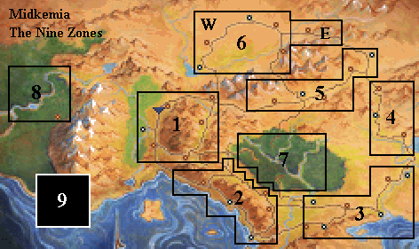
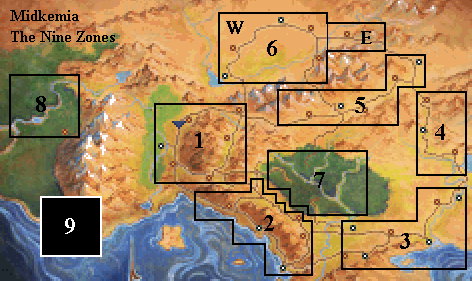

Main Zone Map
See below for access to Dungeons
[HOME]
This is an Image Map. Click a Zone.

NOTE: Zone 9 is the world of Timirianya (Chapter 8).
NOTE: Zone 6 (Northlands) is split into two sections, West (Chapter 4) and East (Chapter 5).
This is an Image Map. Click a Zone.

NOTE: Zone 9 is the world of Timirianya (Chapter 8).
NOTE: Zone 6 (Northlands) is split into two sections, West (Chapter 4) and East (Chapter 5).
DUNGEON ACCESS: